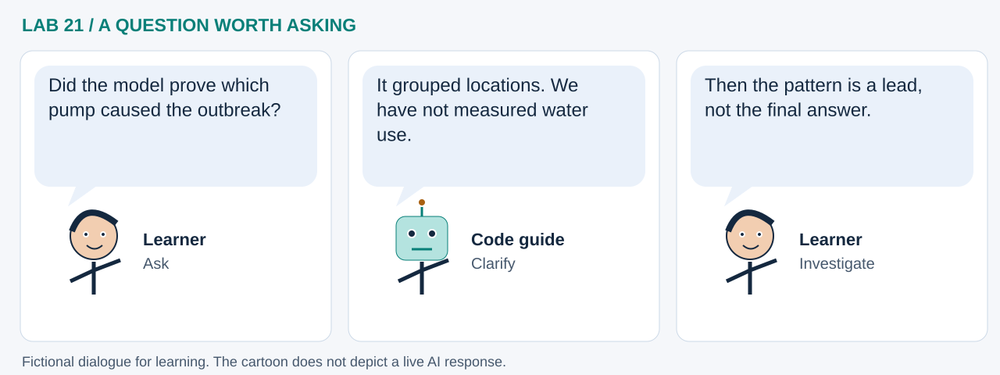

LAB 21 · 32-SECOND VISUAL WALKTHROUGH
From John Snow’s map to GeoAI
Can a model find nearby groups before we reveal the pumps?
Silent, captioned storyboard. Use the player to pause, seek or change playback speed. On a small screen, use fullscreen or read the transcript below. The diagrams explain the method; they are not recordings of a live model run.
Download MP4 · Captions · Open infographic at full size

What runs here?
Pyodide computes with bundled historical data. Plots need no tiles; optional GeoLibre viewing uses its hosted application and basemap.
Unsupervised DBSCAN fits geographic location groups; mapping and pump overlays are separate steps. This is not causal inference.
Transcript and code landmarks
- 00–08s · Map
Inspect 250 historical locations before fitting any model.
load_records() - 08–16s · Group
Find location groups using a geographic distance and a chosen neighborhood size.
DBSCAN(...).fit_predict(...) - 16–24s · Reveal
Add pumps as context after fitting; they were not model inputs.
plot_locations(..., pumps=pumps) - 24–32s · Question
Change the distance and ask what additional evidence an investigation needs.
radius_control
The common misconception

Read the cartoon dialogue
- Did the model prove which pump caused the outbreak?
- It grouped locations. We have not measured water use.
- Then the pattern is a lead, not the final answer.
Try explaining it
Which part learned from data, and which part only changed the display?
Check your reasoning
DBSCAN fitted group membership from locations. Revealing pumps changed only the display. Neither establishes exposure, risk or causation.
Original educational illustrations and captions authored for this repository. See the notebook for data and software citations.